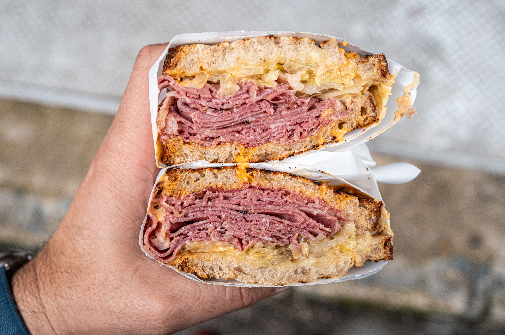

Back to Home
Reuben Sandwich

Description
The Reuben sandwich is an American grilled sandwich comprising corned beef, Swiss cheese, sauerkraut, and Russian dressing or Thousand Island dressing,
grilled between slices of rye bread. The sandwich is traditionally grilled or toasted until the bread is crisp and the cheese has melted.
The origins of the sandwich are disputed. One popular account attributes its creation to Reuben Kulakofsky, a grocer from Omaha, Nebraska,
who is said to have requested the sandwich during a poker game in the 1920s. Another claim credits Arnold Reuben, owner of Reuben’s Delicatessen in New York City,
with inventing it earlier in the 20th century
Ingredients
- 8 slices rye bread
- 1/2 cup Thousand Island dressing
- 8 slices Swiss cheese
- 8 slices deli sliced corned beef
- 1 cup sauerkraut, drained
- 2 tablespoons butter, softened
Steps
- Gather all ingredients and preheat a large griddle or skillet over medium heat.
- Spread one side of bread slices evenly with Thousand Island dressing.
- On four bread slices, layer one slice Swiss cheese, 2 slices corned beef,
1/4 cup sauerkraut, and a second slice of Swiss cheese. Top with remaining bread slices, dressing-side down. Butter the top of each sandwich.
- Place sandwiches, butter-side down on the preheated griddle;
butter the top of each sandwich with remaining butter. Grill until both sides are golden brown, about 5 minutes per side.
- Serve hot. Enjoy!